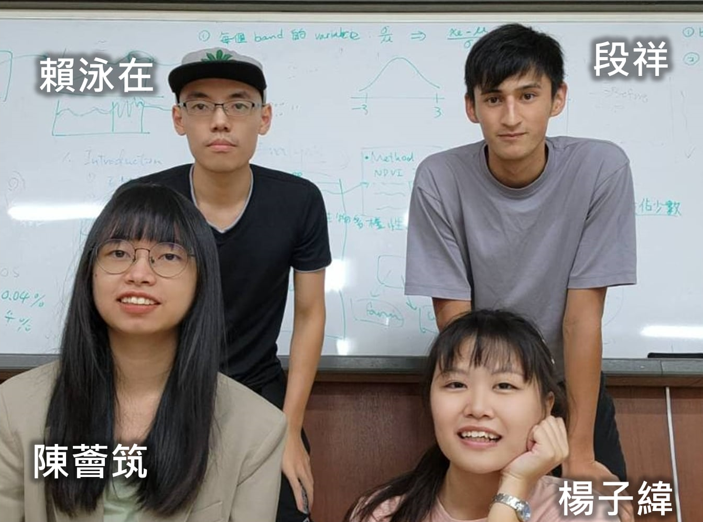
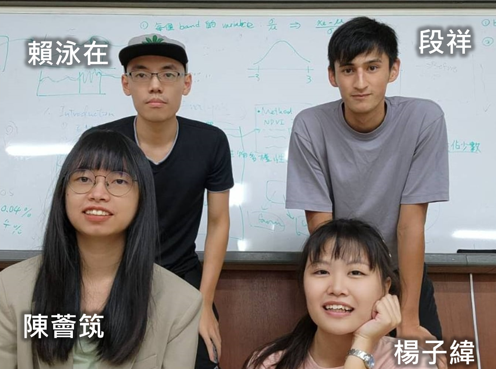

關於我們
We are from Taiwan! 我們是四個來自台灣的學生，非常幸運的在2023年NASA黑客松中取得世界冠軍，獲得當地影響力獎項
在解決世界上生態難題的同時，我們也讓世界看見了台灣，在NASA總部頒獎典禮，我們讓國旗飄揚在全球一百多個參賽國家的直播中
但我們更希望台灣能看見地球科學！推動我們做出跨領域嘗試的，是我們在地球科學的的使命感與浪漫。
和隊員們一起打地鋪睡在研究室，48小時的齊心合作，即使再累我們也精神奕奕。
艱難的挑戰創造了名為回憶的寶物，我們把那年的青春熱血都埋藏在這個網站中，讓時間永遠停留在這一刻。
 

這個頁面沒有使用語言模型校稿，是我一個字一個字親手打出的，我是賴泳在，我很榮幸可以遇到志同道合的夥伴。
在這次挑戰中我們分工合作，我負責算法設計和文獻回顧尋找指標，確定研究的合理性。
段祥負責處理和分析高光譜衛星資料、並執行正射校正、地形校正、指標測試等。
陳薈筑負責前端網頁設計，現在的網站是從陳薈筑的網站修改而來，她就像個魔術師，把我們所有的想像化做現實。
楊子緯負責美編設計和中英翻譯，2023年的ChatGPT沒有她厲害，她負責把我們的作品從好作品變成能贏的作品。
最後感謝一直支持我們的台大理學院副院長 吳俊輝教授，幫我們尋找贊助和提供各種協助，甚至一路陪著我們到了美國，非常感激。